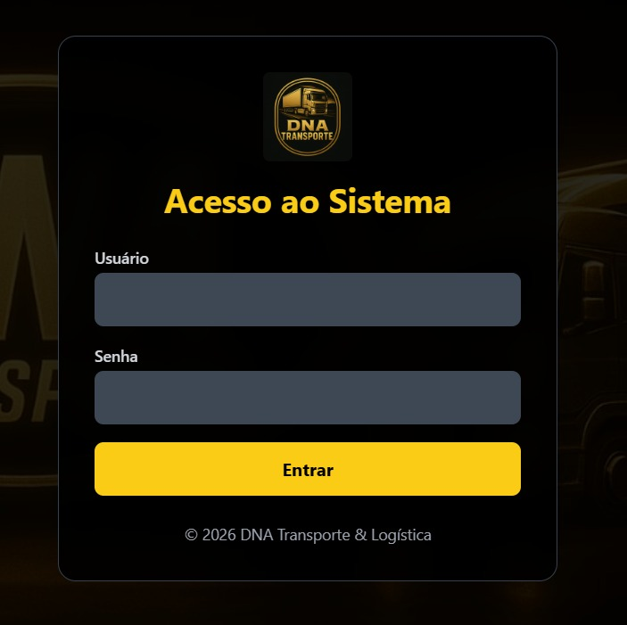
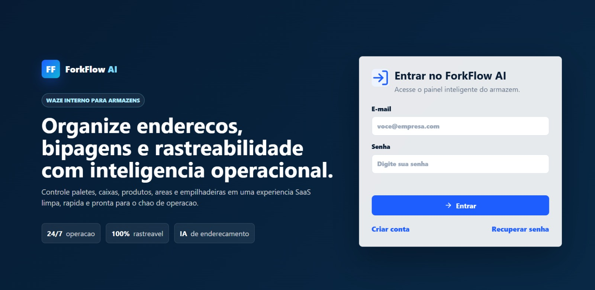
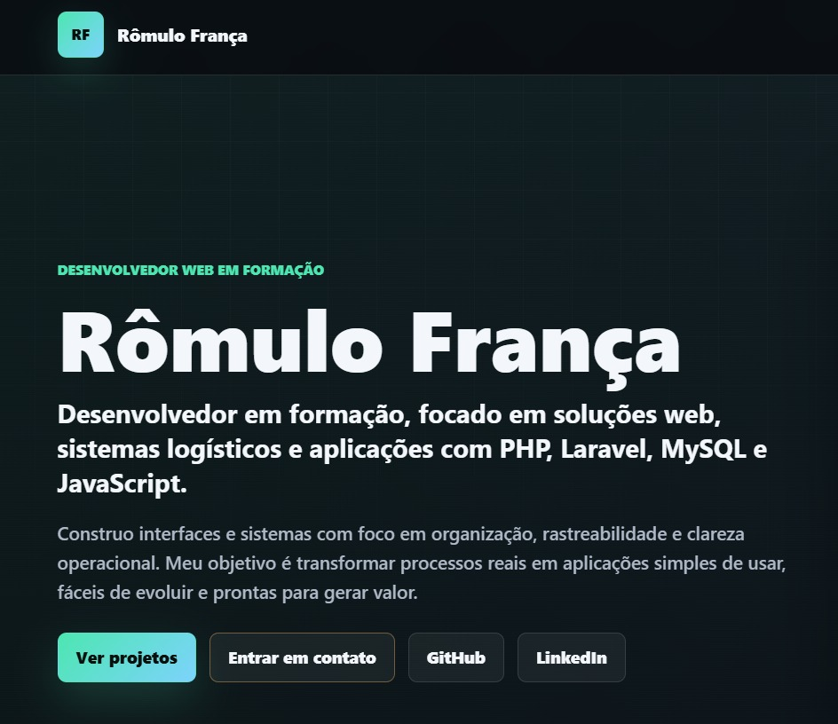

Desenvolvedor Web em formação
Rômulo França
Desenvolvedor em formação, focado em soluções web, sistemas logísticos e aplicações com PHP, Laravel, MySQL e JavaScript.
Construo interfaces e sistemas com foco em organização, rastreabilidade e clareza operacional. Meu objetivo é transformar processos reais em aplicações simples de usar, fáceis de evoluir e prontas para gerar valor.
Sobre mim
Gosto de resolver problemas antes de escrever código.
Sou desenvolvedor em formação e venho direcionando meus projetos para sistemas web com utilidade prática, especialmente em rotinas operacionais, logística, organização de dados e automação de processos.
Trabalho com uma mentalidade simples: entender o fluxo, identificar gargalos e transformar esse conhecimento em uma aplicação clara, consistente e fácil de manter.
Como penso os projetos
- Processo entendido antes da tela ser desenhada.
- Dados organizados para reduzir retrabalho.
- Histórico e status para melhorar rastreabilidade.
- Interface objetiva para uso real no dia a dia.
Tecnologias
Ferramentas que uso para criar soluções web.
Stack voltada para desenvolvimento front-end, back-end, banco de dados e versionamento.
Projetos
Aplicações com foco em problemas reais.
Cada projeto apresenta contexto, solução, tecnologias usadas e evolução planejada.

Projeto destaque
DNATransportes
Plataforma de gestão logística criada para centralizar pedidos, rotas, documentos e atualizações de status. O projeto organiza a operação e melhora a visibilidade sobre entregas e movimentações.
Problema
Informações espalhadas dificultavam controle, acompanhamento e tomada de decisão.
Solução
Sistema web e mobile com cadastro, rotas, status, histórico e indicadores.

Controle financeiro
Financias
Plataforma de Controle Financeiro Inteligente
Sistema web para controle financeiro pessoal, com receitas, despesas, reservas, gastos fixos, metas, notificações e dashboard inteligente.

Em desenvolvimento
Sistema de Controle de Estoque
Aplicação para cadastro de produtos, entradas, saídas, inventário e rastreabilidade de movimentações.

Portfólio
Site pessoal
Plataforma profissional para apresentação de projetos e experiência
Portfólio responsivo desenvolvido para apresentar projetos, tecnologias, experiência profissional e formas de contato para recrutadores e empresas.
Contato